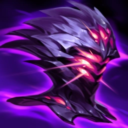

Preseason has been out for a couple of (long) patches now, and we’ve seen how things have shaken out with the new tank Mythics. Our primary goal with these changes was to shift tanks’ farming and damage dealing capabilities from Mythics to Legendaries, freeing up their Mythics’ passives for more exciting and emblematic tank fantasies.
And, after some tuning to Mythics, Sunfire Aegis, and struggling tanks, we believe we’re achieved our goals and that the class has reached a healthier place. Not only have tanks adapted well to Preseason finding success in both Top and Jungle, but we also expect players to better learn and understand tank itemization as time passes. In addition, each of the new Mythics seems to have both powerful individual champion users as well as game states they thrive in.
That doesn’t mean everything is perfect though. Some items (looking at you Jak’Sho) are being used just as well or arguably better by classes other than tanks and not every item is hitting the sweet spot of balance and satisfaction we strive for. To be clear, we are ok with classes other than tanks purchasing these items, but with a few caveats:
- They should not be the dominant Mythic choice on other classes.
- They should pay a clear damage tradeoff for doing so.
- They should not warp how tank Mythics are balanced on tanks.
Additionally, we are working on some changes for Gargoyle Stoneplate to make it live up to its billing as a capstone tank item that will be coming sometime early this year.
With those expectations laid out, let's go over our current assessment of the new Mythics:
Heartsteel
When Heartsteel was first released a lot of players felt the item was too strong. But as time has passed it’s become more obvious where the item’s counterplay exists both via in-game tactics and build itemization. And the item now seems to be in a relatively balanced state.
We’re quite happy with its current state and have no significant changes planned as it has already proven to be an exciting item to build around for many tanks, as well as being viable on a few other champions. That said, we do recognize that it has a high degree of volatility (meaning it has really high highs and really low lows), but we believe tanks having high moment/pop-off games is important.
Jak'Sho, the Protean
Jak’Sho has landed in a good spot for tanks, but has also been a very potent one-stop durability shop for fighter builds. While there are other factors at play, such as other high efficiency 1st item purchases like Ravenous Hydra and Blade of the Ruined King pairing extremely well with Jak’Sho and inflating its power on fighters, we ultimately think it’s a little too good on the class as-is which risks us having to nerf it for tanks when it seems relatively balanced.
We shipped a nerf to address the Fighter outliers in patch 12.23b, and are following up in patch 13.1 with a minor reshape to the item’s outputs to better favor tanks and defensive purchases while lowering its efficiency as a singular durability purchase.
Iceborn Gauntlet
We expected Radiant Virtue to be more niche as, in most cases, it’s a poor item to rush. It’s also a more selfless purchase focused around helping your team rather than your individual power, making it less popular in Solo queue. It’s currently fulfilling its role well and (a little surprisingly) is a powerful item on Top, Jungle, and Support tanks alike (as well as some enchanters). Overall, this item is in a fine state and not in urgent need of changes, but there are a couple potential issues we’re monitoring:
- Radiant is currently very strong on Support tanks. It was intended primarily as a more supportive output for Top/Jungle tanks, but we have no problem with Supports sometimes buying it as long as it doesn’t necessitate us nerfing it for the intended users.
- There’s also potential that it may need to be balanced around Pro play. We’ll have to wait and see how things pan out before we make a proper assessment on this front.
- Because of Radiant’s design, it can be hard to perceive its effect in-game. Periodic AoE effects are hard to keep track of in the middle of a teamfight, especially when they’re applied to your teammates. This problem is admittedly pretty tough to solve, but there might be some small tweaks we can make to make sure Radiant is more satisfying without drastically changing it.
Given these issues we think there are a few potential paths forward:
- Leave Radiant as is and balance it as a viable option for tanks in any role.
- Shape it to be more reliant on additional health purchases to ensure it remains viable on Top/Jungle users should it need to be nerfed
- TShape the item as a Support item and potentially move Locket of the Iron Solari to Legendary.
- Minorly rework mechanics to make the item more satisfying/appreciable.
Radiant Virtue

This one landed in a decent spot from a balance standpoint and has a reasonable breadth of users. Overall satisfaction and excitement for the item is lower than we wanted however, so we’ll be exploring if there are any small scope changes we could make to the pattern/output of this item to have it better match the fantasies of the other tank Mythics.
A couple potential directions among many possibilities would be adding a health ratio to the Spellblade proc or giving the Iceborn user a bonus effect when inside their own slow zone.
Conclusion
That’s it! I hope this was an informative rundown of our read on the current state of tank Mythic items. We’ll continue to watch and assess how things settle over 13.1, so please keep the feedback coming and have fun with the new items!